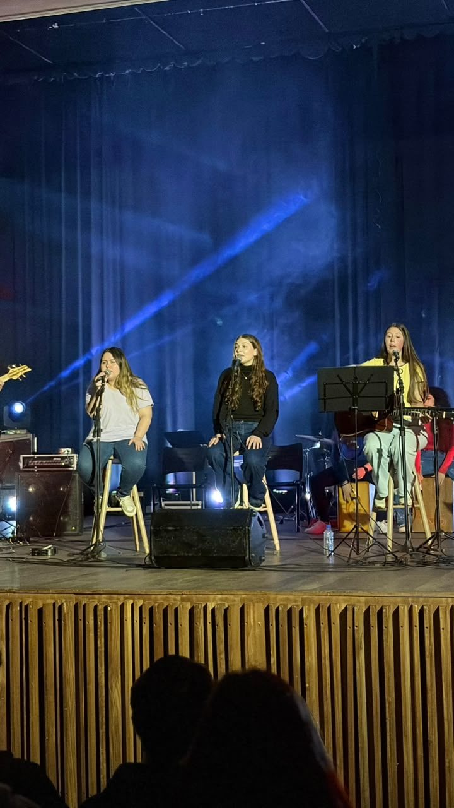
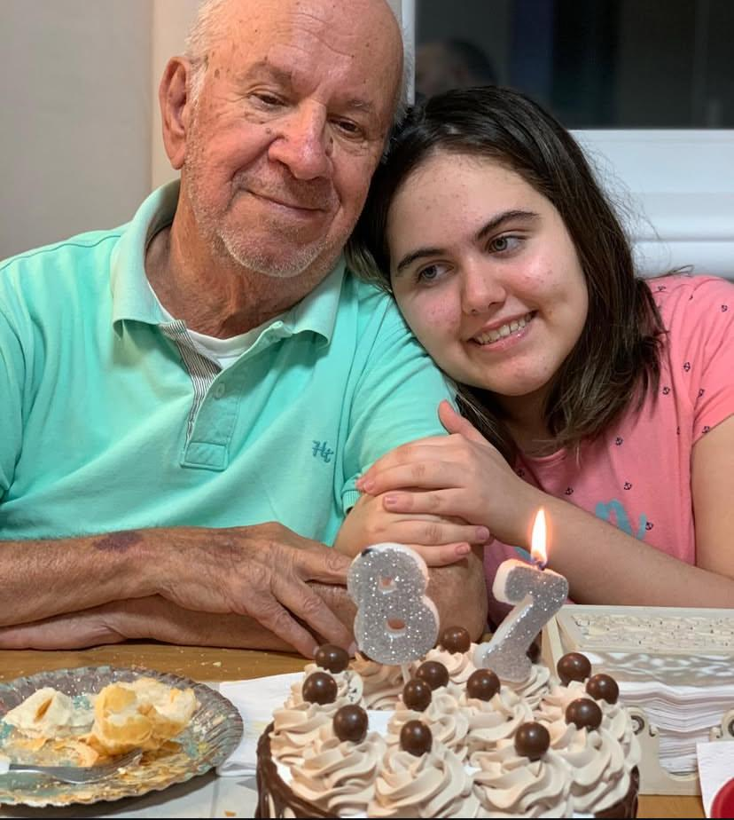
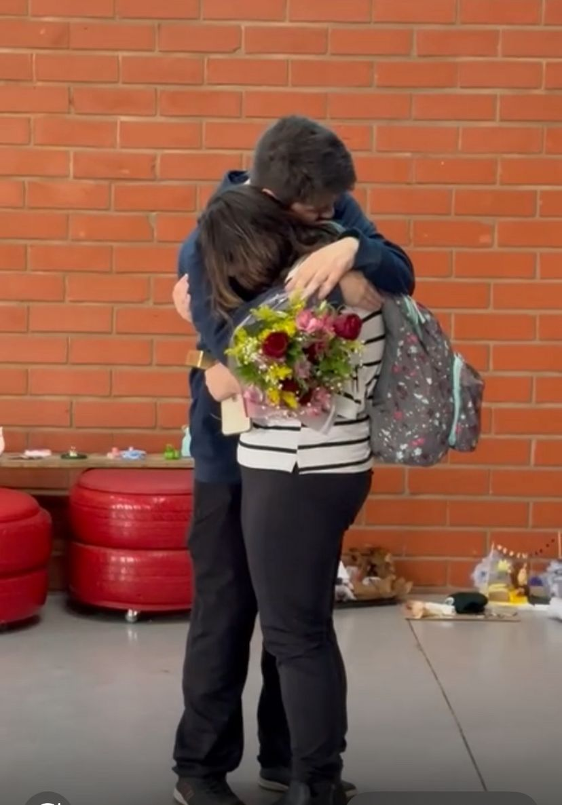
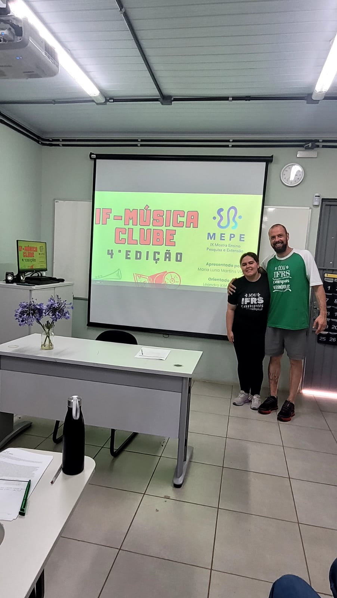

Minha Trajetória no IFRS
Projeto que mais me marcou
IF-Música Clube
O projeto IF-Música Clube, porque foi uma experiência que me fez ter responsabilidade com o grupo, além de cuidar da organização dos ensaios e ter calma nas situações difíceis.

Professores que fizeram diferença na minha trajetória
Prof. Marcos Corino 💻
O professor Marcos Corino me ajudou a enxergar a tecnologia sob uma perspectiva diferente, além de me ensinar a não desistir diante de situações difíceis ou de momentos que possam abalar meu desempenho escolar.
Profa. Adriana Tedesco 🧪
A professora Adriana Tedesco sempre foi muito sincera em relação ao meu desempenho e ao meu esforço em sala de aula. Além de ser uma excelente professora de Química e uma grande amiga da minha família, teve importância na minha trajetória por suas orientações e pela confiança construída ao longo dos anos.
Profa. Marisete Tramontina 📝
A professora Marisete Tramontina foi importante por acreditar no meu esforço e me incentivar a não desistir da redação e do sonho de ingressar em uma faculdade, mesmo diante das dificuldades.
Prof. Marcos Luft 🌍
Já o professor Marcos Luft contribuiu para ampliar meu interesse pelo conhecimento histórico, incentivando-me a compreender melhor a história do Brasil e do mundo. Além de ser um grande professor, admiro sua sinceridade e sua maneira crítica de abordar os acontecimentos da sociedade.
Profa. Magda 🎭
A professora Magda também teve um papel muito especial na minha trajetória, pois sempre me incentivou a expressar meus talentos e a não deixar de lado minhas habilidades. Sou grata por ela reconhecer e valorizar aquilo que gosto de fazer, além de ser uma professora maravilhosa que certamente levarei comigo para a vida.
Momento mais difícil
A perda do meu vô Juarez
O momento mais difícil da minha vida foi a perda do meu avô, Juarez, no dia 4 de fevereiro de 2025. A partir daquele dia, o luto deixou de ser apenas um sentimento passageiro e se transformou em uma dor intensa e constante, que me acompanhou durante todo o ano.
Lidar com essa ausência abalou profundamente a minha saúde mental. O peso da tristeza acabou refletindo na forma como eu me relacionava com as pessoas ao meu redor, tornando a convivência e a comunicação muito mais difíceis em meio ao meu próprio processo de dor.

Momentos mais divertidos

Meu namorado e meus amigos
Os momentos mais divertidos da minha trajetória foram vividos em 2025, ao lado do meu namorado e dos meus amigos do 3º ano. Guardo com muito carinho as comemorações dos nossos aniversários, a animação do Halloween e, principalmente, os momentos simples do cotidiano — como ficar andando pelo campus nos intervalos, conversando sobre a vida e dando muitas risadas juntos. Em meio à rotina puxada dos estudos, foi a companhia deles que trouxe leveza, parceria e as lembranças mais alegres que levo do IFRS.
O que eu faria diferente? O que eu repetiria?
Amizades e MEPE
Eu não desistiria de fazer novas amizades em 2026, mesmo com as partidas dos meus amigos para outras cidades, e repetiria a MEPE, pois é uma experiência que necessita de muita coragem e desempenho no projeto apresentado.

O que eu levo pro IFRS pra vida?
Do IFRS, levo para a vida o valioso aprendizado de que, por maiores que sejam os desafios, os imprevistos e as situações de pressão, o segredo está em manter a calma, acreditar no próprio potencial e nunca desistir. Cada obstáculo superado ao longo dessa caminhada me mostrou que a persistência e a dedicação transformam dificuldades em amadurecimento, dando-me força e confiança para continuar lutando pelos meus sonhos e construindo o meu futuro com coragem.